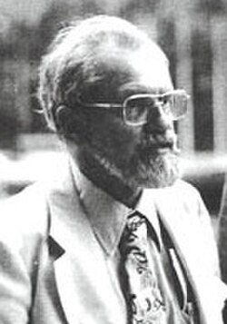

J. Allen Hynek
Astronomer, 1910 to 1986

The Air Force's scientific consultant on Projects Sign, Grudge, and Blue Book from 1948 to 1969. He began as a skeptic but came to argue that some cases deserved serious study. 1
He coined the "close encounters" categories and founded the Center for UFO Studies in 1973. 1
Open in the interactive Watcher
Related
- Project Blue Book Scientific consultant to Blue Book
- Wright-Patterson AFB Blue Book was run from Wright-Patterson
- Socorro landing Investigated the 1964 Socorro landing
- The Edge of Reality Book, 1975
- The UFO Experience Book, 1972
Sources
- J. Allen Hynek Wikipedia